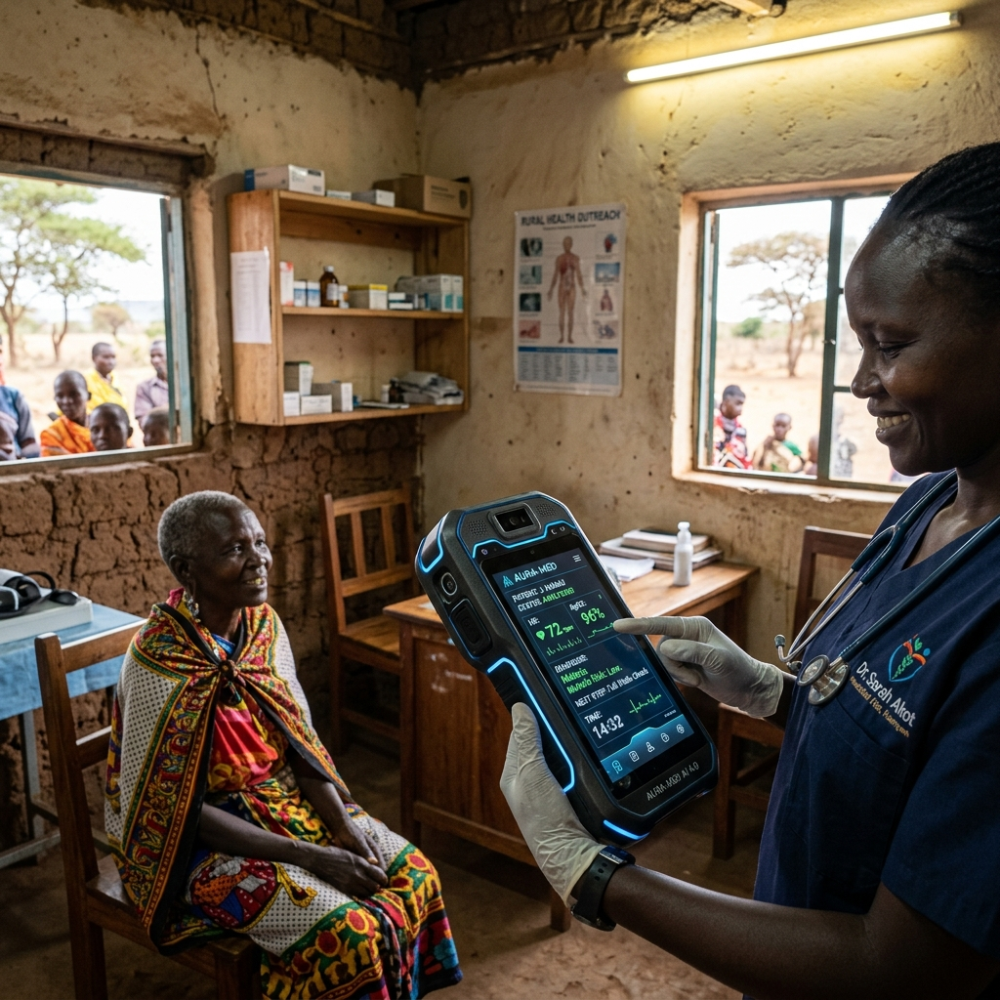
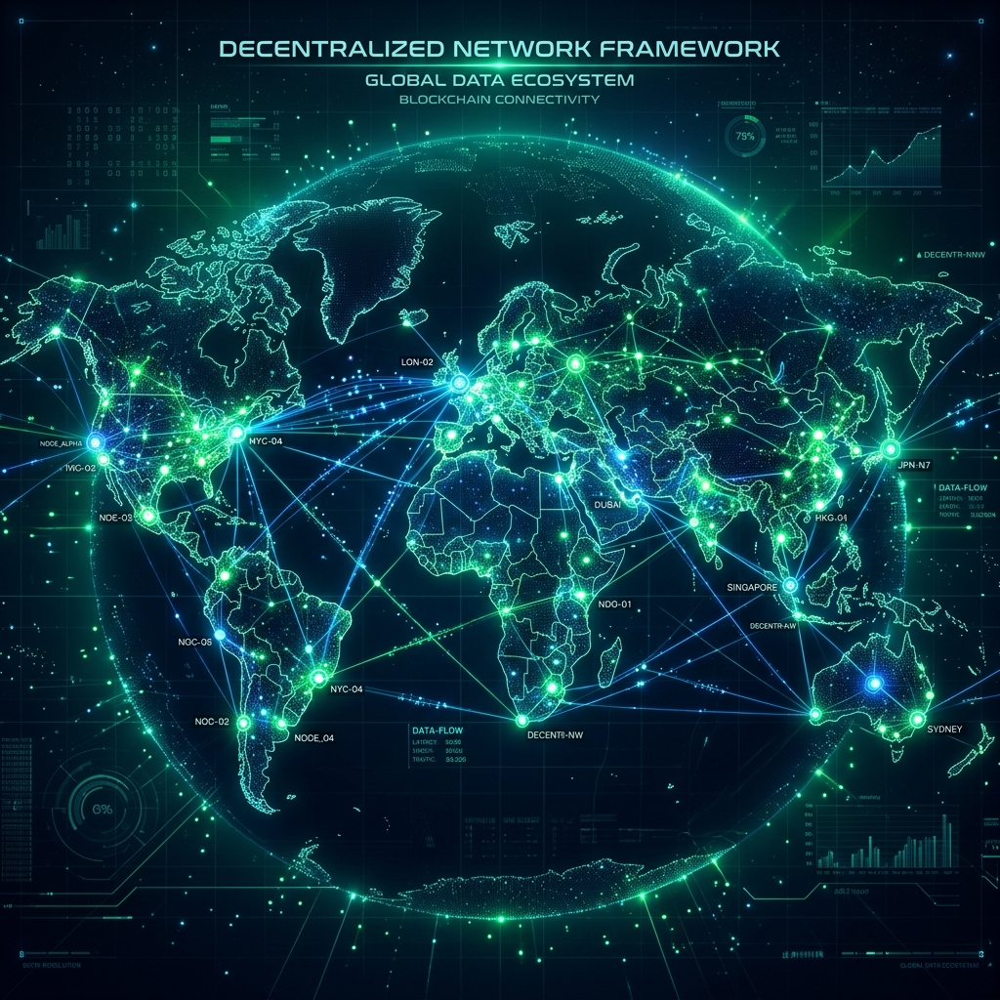

PRISM-Edge is an offline-first maternal & newborn safety companion. On-device AI screens pregnancy and newborn danger signs in Bangla voice, and when cyclones or floods black out the mobile network, life-critical alerts still hop phone-to-phone over SMS/Bluetooth mesh until they reach a clinician.
An app is just a program on the phone — like a calculator, it only needs the internet to talk to a faraway server. We removed the server: all the brains live inside the phone. And for sending alerts without towers, messages pass phone-to-phone like a folded note passed hand-to-hand.
The health worker types blood pressure, pulse, temperature — or records 20 seconds of voice. The AI and WHO rules live inside the app, like a doctor's brain in your pocket. It answers instantly: normal, urgent, or emergency.
Calls, WhatsApp, every cloud app go dark. This happened to 26,000+ towers in Cyclone Remal (2024). A normal health app is useless exactly when it matters most.
The emergency shrinks into a 43-character coded note ("EMERGENCY · BP 165 · GPS"). Phones pass it automatically over Bluetooth (works side-by-side, no tower, like ShareIT/AirDrop) — market phone → shelter phone → relief boat. Every phone is a postman.
The moment ANY phone in the chain catches even one bar of signal, the note rides out as a plain SMS (SMS never needed internet!) to the clinic gateway. Doctor sees EMERGENCY + location. Ambulance moves.
Nothing here is unproven technology — Bluetooth transfer, SMS and store-and-forward messaging are decades old. The invention is packing a medical referral into 43 characters and automating the hand-to-hand relay. Try both demos below ↓
This architecture was engineered specifically to address core global challenges, systematically intersecting with multiple UN Sustainable Development Goals (SDGs) and key humanitarian tech rubrics.
| Target Theme | PRISM-Edge Technological Solution |
|---|---|
| 🌍 Digital Inclusion | The Base91 Gossip Router allows completely offline communities to participate in the digital economy by bouncing heavily compressed data peer-to-peer via SMS fallback, requiring zero broadband. |
| 🩺 Healthcare & Mental Wellbeing | Runs acoustic biomarker extraction on-chip to detect dysphoria/depression markers. Integrates WHO EmONC triage models to prevent maternal mortality in remote clinics. |
| ⚖️ Gender Equality | The integrated Inclusive Escrow system features blind competency matching prioritizing rural female artisans, bypassing exploitative middlemen via zero-knowledge proofs. |
| ⛈️ Climate Response | Edge IoT endpoints compute coastal estuarine salinity and Steadman heat matrices locally, generating adaptive bio-remedies for farmers instantly without cloud reliance. |
| 🔐 Security & Data Privacy | Implements mathematical Laplace Differential Privacy ($\epsilon=0.5$) at the edge, guaranteeing absolute anonymity of patient and demographic data before transmission. |
Cloud servers are a single point of failure in developing regions. PRISM-Edge quantizes massive decision matrices into constant-time ($O(1)$) graphs that run instantly on any ARM edge processor.

Processes raw voice arrays locally to extract fundamental jitter/shimmer biomarkers correlated with PHQ-9 dysphoria. Integrates WHO EmONC maternal algorithms directly on-silicon.

When backbone infrastructure is destroyed, nodes initiate a **Base91 Gossip Protocol**, highly compressing JSON payloads and bouncing them peer-to-peer across the map until they reach an uplink.
PRISM-Edge is not just a technological breakthrough; it is a highly scalable, sustainable business model targeting a massively underserved global market.
NGO & government health programmes (DGHS, UNICEF-type maternal programmes) that already fund CHW networks and need them to work during network blackouts.
Bangladesh's coastal disaster belt: ~13 cyclone-prone districts where towers fail repeatedly (Remal 2024) and maternal services are thinnest. Expansion path: the global "off-grid maternal health" segment across South Asia & Sub-Saharan Africa.
Software licence per CHW per year (target < $5, comparable to one printed flip-chart replacement), zero server cost by design, SMS relay carried on existing handsets. Detailed sizing published only after pilot pricing discovery — we do not invent market numbers.
* Sizing approach: bottom-up from CHW counts × licence price; top-down sanity check against WHO digital-health investment reports. Numbers will be published after pilot pricing interviews; every impact statistic shown on this site is cited in the References section below.
Test the quantized logic engines directly. Computations happen 100% locally in your browser.
Every number is computed from your microphone on this device. No canned values exist in this demo — view source and check.
core_engine/clinical_triage.py follows published WHO/UNICEF IMCI danger-sign criteria, WHO EmONC signals, APGAR scoring and Helping Babies Breathe resuscitation thresholds. It is decision support for trained health workers — not a medical device.